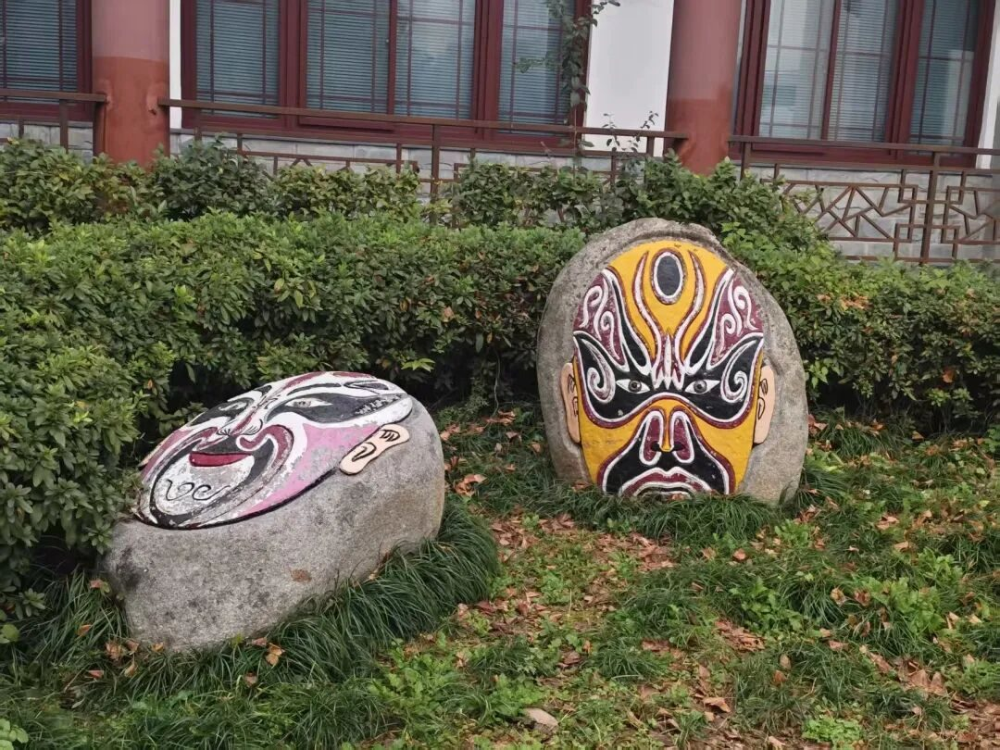
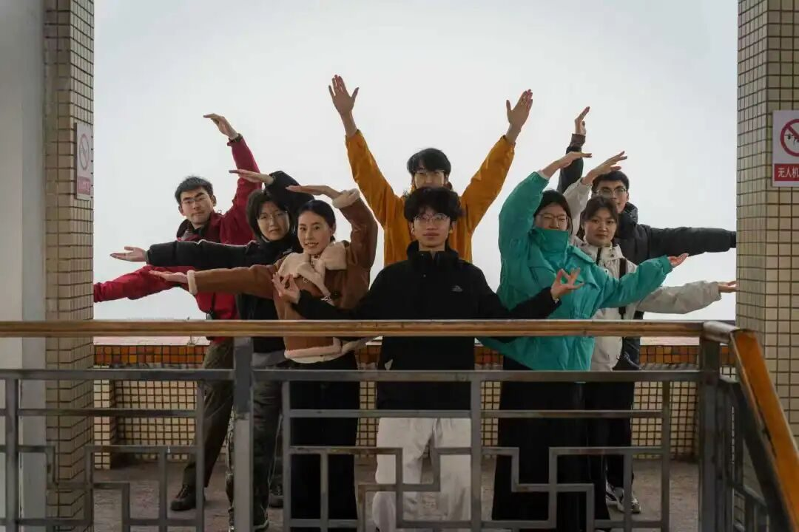
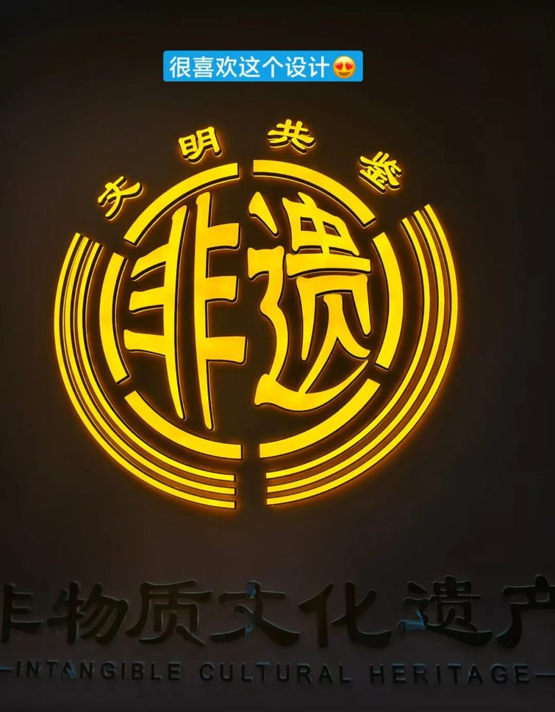

【行者无疆·渝见非遗】个人实践感悟——李凌志


参与“行者无疆”实践团的重庆非遗探索之旅，于我而言是一场充满荣誉与感动的文化邂逅。能够再次成为这支怀揣文化热忱的队伍一员，与伙伴们共赴非遗之约，这份归属感与使命感，让整个实践过程倍添意义。
组建团队时，便被彼此的赤诚与协作氛围深深打动。从筹备到启程，从交流到互助，每一个细节都彰显着团队的凝聚力。当我们以文化传播者的身份，穿梭在重庆的街巷与非遗工坊，那份肩负传承使命的荣誉感油然而生——我们不仅是参观者，更是非遗文化的守护者，这份身份让每一步探索都更具分量。
实践中的每一次体验，都让我与巴渝非遗深深共鸣。在非遗文化体验馆，了解火锅历史的同时，读懂了其“包容共生”的文化内核；手握折扇，触摸细腻竹骨与精美扇面，七十二道工序背后的匠人坚守令人动容；在荣昌陶工坊，亲手揉捏陶土、见证泥土成器，更让我对“匠心”二字有了直观认知。这些沉浸式体验，让非遗不再是书本上的文字，而是可感、可触、可悟的鲜活文化。
这段旅程，让我和“行者无疆”实践团链接更深。这里有专业的指导、真挚的情谊，更有对文化传承的执着担当。未来，衷心祝愿实践团能步履不停，足迹遍布更多非遗之地，吸引更多人加入文化传承的行列，让古老非遗在新时代焕发新生。而我也将带着这份感悟与收获，以行者之姿，在传承之路上坚定前行。
非遗传承

行者无疆
来源 | 行者无疆实践团
文字 | 李凌志
图片 | 行者无疆实践团
编辑 | 冯语城
审核 | 刘辰锡
责编 | 邹靓靓 周 亮